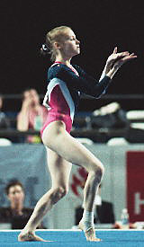

Oksana Knizhnik (USSR/UKR)
1996 Kiev International AA Silver Medalist

Oksana was born on January 1, 1977 in Kiev.
Competition Results
1991
Massilia Cup: 9th AA
1992
CIS Championships: 15th AA, 3rd V, 7th FX
CIS Cup: 2nd Team, 14th AA
Massilia Cup: 9th AA
World Stars: 14th AA
1993
Golden Sands: 7th AA
Hungarian International: 10th AA
1994
Goodwill Games: 10th AA
USA-UKR Dual Meet: 10th AA
World Championships (Brisbane): 8th V (prelims), 13th B (prelims), 15th FX
(prelims)
World Championships (Dortmund): 5th Team
1995
Atlanta Gymnastics Invitational (Pre-Olympics): 6th AA
Hapoel Games: 8th AA
Intl. Championships of Romania: 3rd AA, 2nd V, 2nd B, 8th FX
Kosice International: 6th AA, 6th B
Massilia Cup: 5th B, 6th FX
Messe Cup: 4th Team
UKR Cup: 5th AA
World Championships: 5th Team
1996
Kiev International: 2nd AA
Olympics: 5th Team
This page was created on September
02, 2006 and was last updated on January 03, 2007.
© Gymn Forum